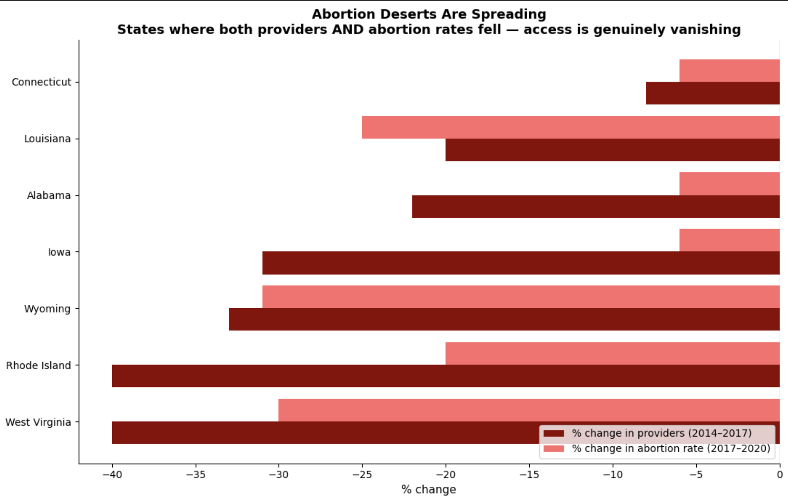
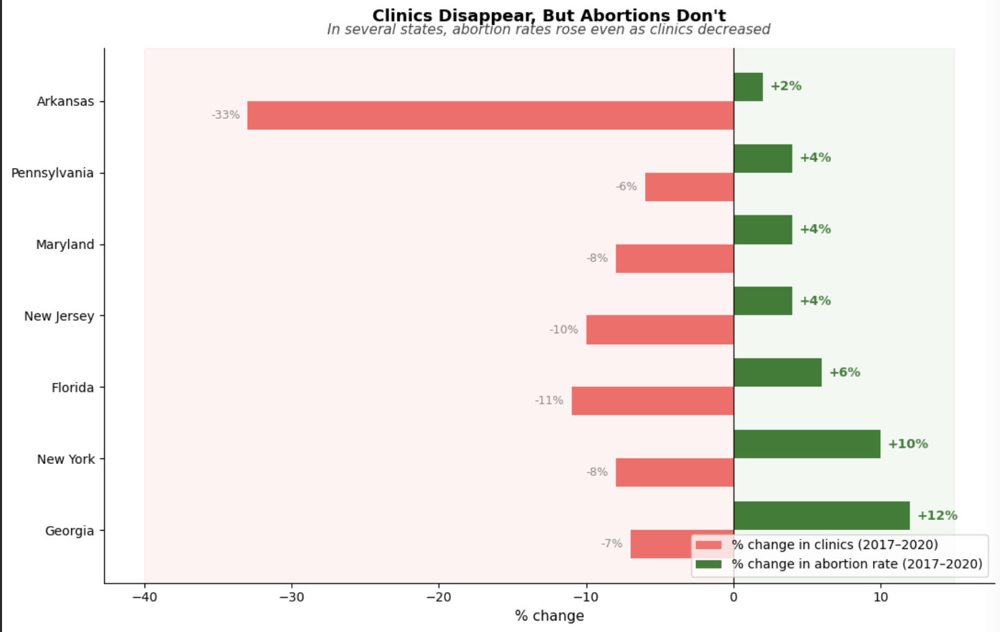

Proposition: States are becoming abortion deserts, and it is getting worse over time
FOR the Proposition

Design Decisions and Rationale:
- [-0.5] Pairing two different time windows on the same chart. Provider change uses 2014 to 2017 data while abortion rate change uses 2017 to 2020, meaning the two bars on each state do not actually cover the same period. We deliberately chose these two columns because together they show the steepest declines and using the same time window for both would have produced smaller and less alarming bars. Placing them side by side implies a direct within period relationship that the data does not support, making the correlation look tighter and more causal than it actually is.
- [-1] Filtering to states where both providers and abortion rates declined simultaneously. We created a calculated filter to isolate only states where both metrics moved in the same negative direction and then plotted only that subset. This filter does not exist in the raw data and is never disclosed in the chart. The full dataset contains many states where clinic losses did not produce rate declines, which would directly contradict the argument. By surfacing only the states that confirm the pattern we make a selective exception look like a national trend.
- [-1] Using two shades of red for both variables anchored left of zero. Assigning matching red tones to both variables and constraining the x-axis to only show negative values collapses two distinct metrics into a single visual story of decline. We considered using contrasting colors but found that matching reds made it harder for the reader to distinguish the two metrics and easier to read the chart as one unified signal of collapse. The truncated axis that never crosses zero reinforces the impression that there is no positive story anywhere in the data.
AGAINST the Proposition

Design Decisions and Rationale:
- [-1] Filtering to states where clinics fell but abortion rates rose simultaneously. We created a calculated filter to isolate only states where the two metrics moved in opposite directions and then presented that subset as if it represents a general pattern. This filter does not exist in the raw data and is never disclosed anywhere in the chart. The full dataset contains many states where clinic losses were accompanied by falling rates which would directly undermine the argument. Surfacing only the contradicting exceptions and framing them as the rule is the most deceptive transformation in either visualization.
- [+1] Using the same 2017 to 2020 time window for both variables. Both clinic change and abortion rate change use identical time bounds which required us to use the clinic change column specifically rather than the provider change column which covers a different period. This was a deliberate data selection choice that makes the comparison apples to apples and harder to dismiss on methodological grounds. We considered the provider column because it shows steeper losses but the inconsistent time window would have been an easy target for criticism so the consistent window was both more earnest and more strategically defensible.
- [-0.5] Diverging bar design with opposing colors anchored at zero. We set up the chart so that clinic losses extend left in pink and rate gains extend right in green both anchored at zero which visually dramatizes the gap between the two variables. We considered a standard grouped bar chart but found it did not communicate the opposition as forcefully. The diverging design makes small differences in magnitude look like large structural divergences and the title tells the reader how to interpret that divergence before they examine a single state combining charged framing with a design that amplifies the apparent decoupling of supply and demand.
- [-1] Plotted both metrics on the same x-axis: The percent change in clinics and the percent change in abortion rate measure different things: supply and demand. Putting them on the same axis makes them look more directly comparable than they really are. For example, a 33% drop in clinics next to a 2% increase in abortion rate can visually feel like a balanced comparison, even though the clinic loss is much larger in practical terms.
- [-2] Used "clinics" in Chart 1 but "providers" in Chart 2: Clinics are dedicated facilities, while providers can also include hospitals and physicians’ offices. Each chart uses the measure that best supports its message. The false side uses clinics to show that even when facilities decline, abortion rates do not always drop. The true side uses providers to show a broader decline in access overall. A more honest version would use the same measure across both charts.
- [-1] Made rate increases pop in bold: We made the rate increases bold while leaving the clinic decreases in a small gray font. It pulls your eve straight to the side we want you to focus on and quietly downplays how much clinic access actually fell. Honestly, both numbers matter equally but matching the styles would've made the rate growth blend in instead of feeling like the headline.
Final Reflection
Building both sides of this argument from the same dataset forced us to confront how much visualization is an act of framing rather than neutral reporting. The data does not speak for itself, every choice about which columns to use, which time window to show, which states to highlight, and what to title the chart shapes what story the reader walks away with. What surprised us most was how legitimate many of our deceptive choices felt in the moment. Pairing two different time windows felt reasonable because the data did not give us a cleaner option. Filtering to states where both metrics fell felt justified because those states genuinely tell a coherent story. It was only when we stepped back and asked what we were leaving out that the manipulation became visible.
This process changed how we think about ethical visualization. We came in assuming there was a clear line between earnest and deceptive design, and we left thinking the line is more of a gradient. Truncating an axis is obviously deceptive. Choosing a red color scheme for an alarming topic feels justified. But filtering data to the subset that supports your argument, choosing a metric that only exists because you engineered it, or annotating outliers in a way that neutralizes them, these all live in a gray zone where intent and impact are hard to separate. Our working definition of ethical visualization after this project is that a choice is acceptable if a reasonable reader, shown the full dataset and your methodology, would still consider your conclusion fair. It becomes misleading when the conclusion would collapse if the methodology were transparent.
The most difficult part of this assignment was not building the deceptive visualization, it was building the earnest one. The true side chart went through several iterations because every time we added a design choice to make it more persuasive, we had to ask ourselves whether we were crossing a line. The false side was almost easier because we knew we were constructing an argument and could be deliberate about it. That asymmetry itself felt like a lesson: the most dangerous visualizations are probably not the ones built with intent to deceive, but the ones built with intent to inform that quietly make all the same choices anyway.